Windows与Linux双系统安装教程
前排提示:网上有些教程（包括右边的推荐教程）叫你直接“自动分区”或整个硬盘分区，请不要去尝试，因为这会把你的Windows系统格式化，请务必选择“手动分区”（下面有教程）。初学者建议选择安装Debian/Ubuntu/CentOS/Fedora等Linux发行版，这些发行版安装过程和Windows一样简单，不建议初学者安装Gentoo/Arch 发行版，那是用命令行安装的，能折腾你半天以上，适合有一定Linux基础的人玩。
一、安装前准备:
- 1.在Windows系统下载：
- ①Linux镜像文件(.ISO)(本例以CentOS 7做例子)
- ②UltraISO软碟通
- ③EasyBCD
- 2.准备一个8GB的空U盘；
- 3.从Windows磁盘里分出40—60GB的空间；
- 4.请确保你Windows系统的磁盘分区是一个主分区，其余为逻辑分区。（如果不是请通过DiskGenius分区工具更改）
二、具体安装步骤：
1.下载Linux镜像文件、UltraISO软碟通、EasyBCD,自行百度，不作演示
2.准备一个8GB的U盘
3.从你较大的盘符里分出40-60GB的空间
4.确保目前的windows系统是符合一个主分区，其余为逻辑分区的要求。
5.插入U盘，找到下载好的Linux镜像文件右击，打开方式选择UltraISO
（1）点击"启动"——写入硬盘映像
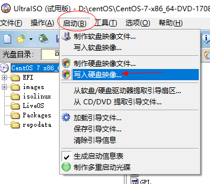
（2）弹出的下图界面后，点击“写入”，等待完成
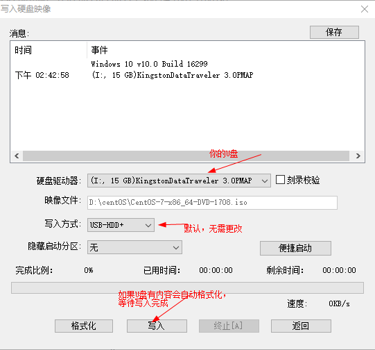
6.经过上述的操作，你已经把Linux系统写入U盘，现在开始安装:
-
（1）插入装有Linux系统的U盘，重启电脑，在电脑开启的时候，按F12选择U盘启动
-
（2）选择第一个Install CentOS 7 ,回车
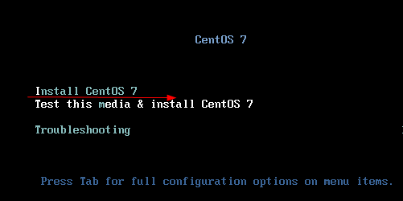 -
（3）选择语言
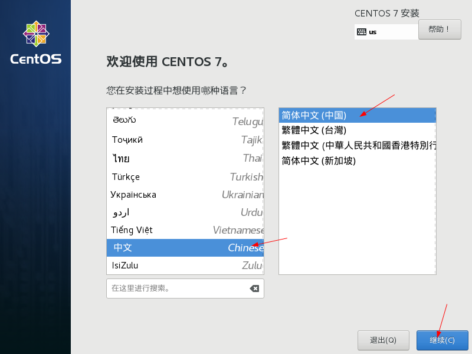 -
（4）这里有两处关键选项，第一是“软件安装”，第二是“安装位置”
-
（5）点击“软件选择”，默认是“最小安装”，指的是命令行界面，初学者不建议直接使用命令行界面，我们选择“GNOME桌面，即图形界面”，右边按你个人需求选择，点击左上角“完成”
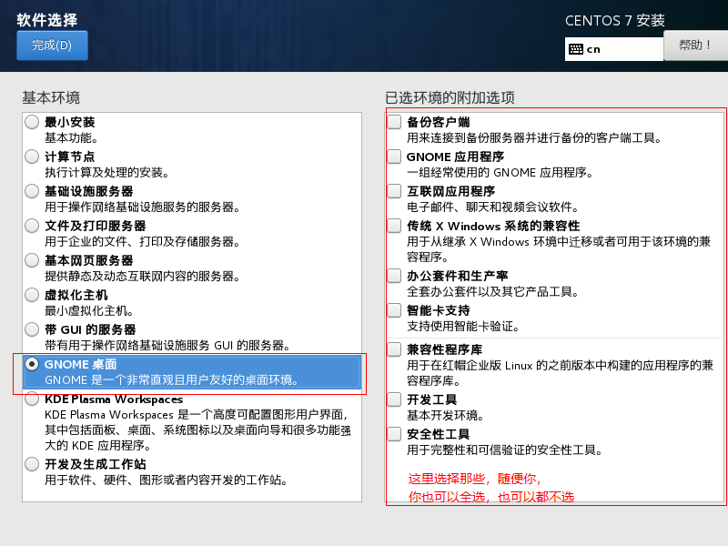 -
（6）点击“安装位置”，选择磁盘，——我要配置分区
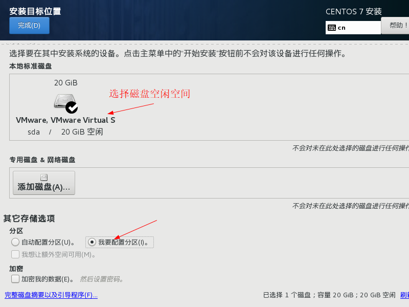 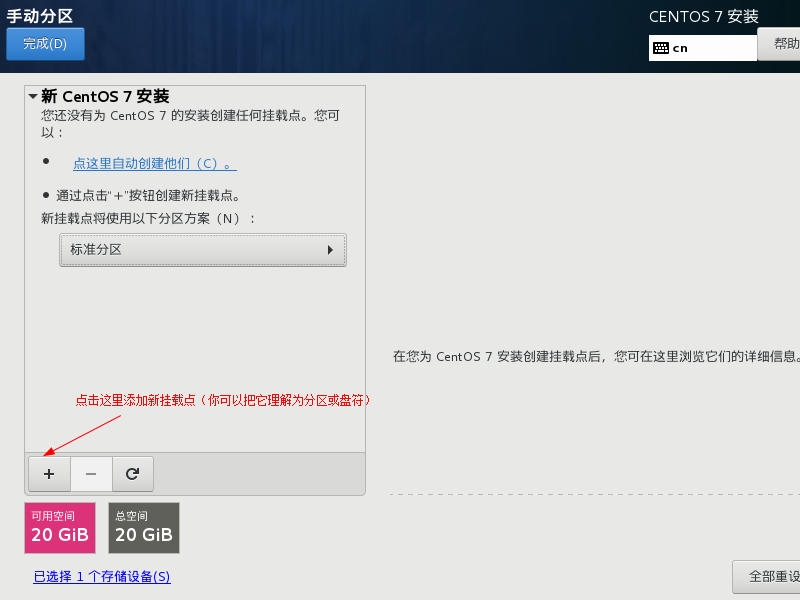 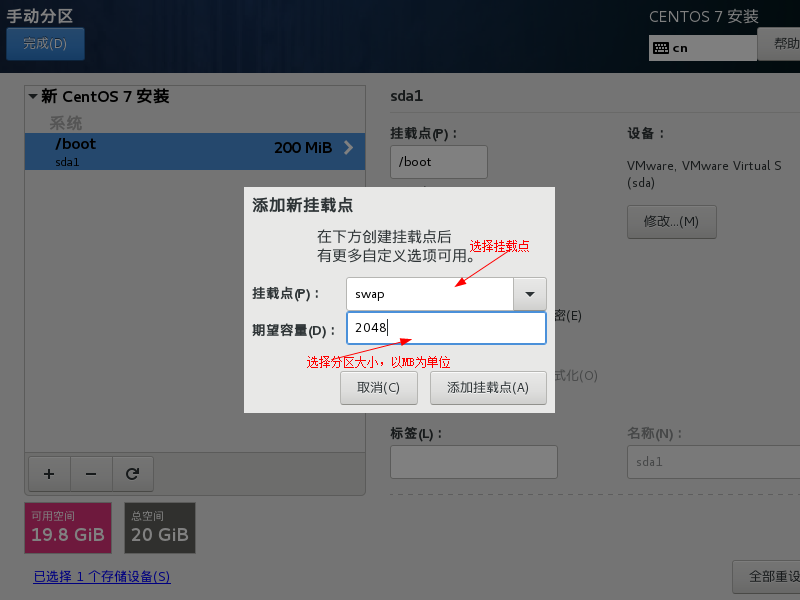 -
（7）分区完毕后，点击“完成”，返回安装界面点击“开始安装”
-
（8）安装过程中，你需要设置root密码，和创建一个新用户
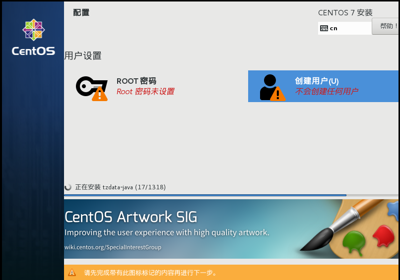 -
（9）等待安装完毕后，重启进入windows系统，打开EasyBCD
-
（10）添加Linux系统开机引导
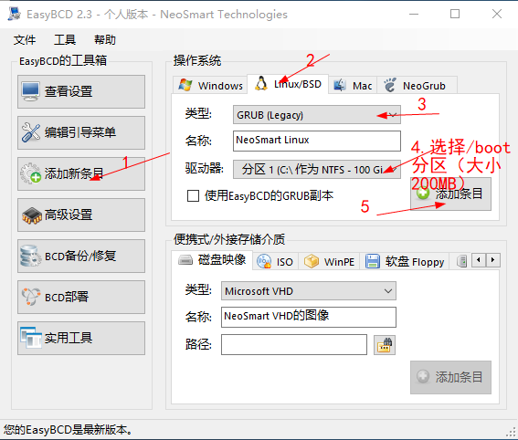 -
（11）在“编辑引导菜单”那里，你可以设置默认系统和系统选择时间
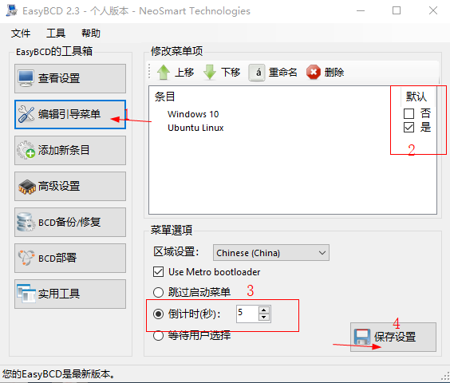 -
（12）好了，开机时候你可以自由选择是进入Windows系统还是进入Linux系统
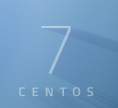
挂载点 容量（大小/MB） 分区类型 文件系统 备注 / 剩下的全部空间 逻辑分区（LVM） Ext4 必须分区 Swap(交换空间) 2048 逻辑分区（LVM） Swap 必须分区 /boot 200 主分区(逻辑分区) Ext4 建议分区 /home 2048—5120 逻辑分区（LVM） Ext4 建议分区
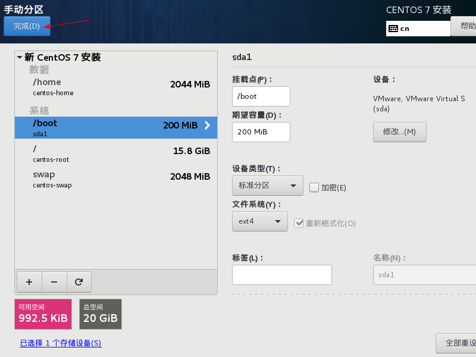-
①右击“此电脑（计算机）”——点击“管理”——点击左边的“磁盘管理”——右击空间较大的磁盘（此处以E盘为例）——点击“压缩卷”——输入需要分出的空间（建议40960—61440）——点击“压缩”——完毕（绿色就是可用空间）
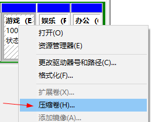 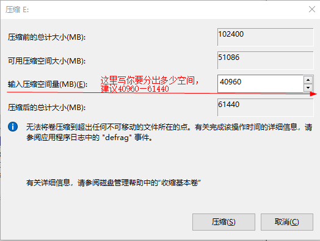 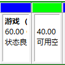①按照上述步骤打开“磁盘管理”，查看右边磁盘状态，如果是下表情况，说明无问题，如果不是，请联系我们，说明你的情况，会为你免费解决问题。
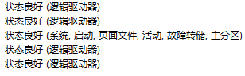总结：其他Linux发行版安装也可以按照上述步骤实现双系统，而Linux各发行版安装过程在某些方面是有点差别的。有些Linux发行版在安装的时候可以自由配置更多的东西就复杂些，例如Arch、Gentoo；也有些Linux发行版安装像Windows这么简单，例如Ubuntu、CentOS。重点是在安装时候要弄清楚，你要“安装命令行界面还是图形界面”和“要挂载那些分区”。